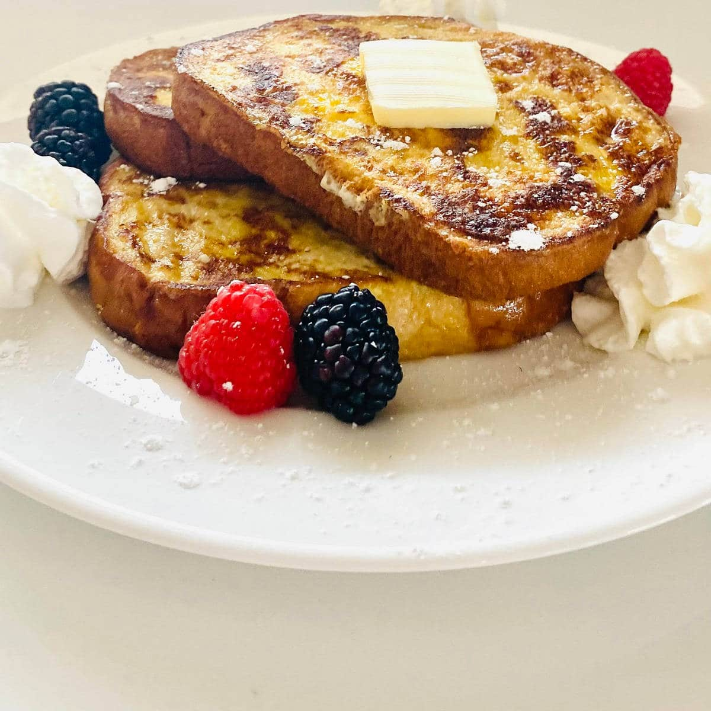

Anabolic French Toast

Description
Anabolic French Toast is a Coach Greg classic! Enjoy this delicious high protein version of a North American
classic breakfast. It is recommended to pair the anabolic french toast with fresh fruit or your favorite low calorie syrup (such as Walden Farms)
Nurition per serving
- Calories: 270
- Fat (g): 1
- Carbs (g): 30
- Fiber (g): 6
Ingredients (1 serving)
- 180g (1/4 cup) egg whites
- 2 slices of regular bread ( up to 80 calories a slice )
- 2 packets (~1 tbsp) sweetner
- 1 tbsp cinnamon
- 5g (1 tsp) vanilla extract
- Cooking Spray
- 60ml (4 tbsp) low-calorie syrup (20 calories)
Steps
-
In a bowl, add egg whites, sweetener, cinnamon, and vanilla
extract. Whisk until spices are evenly distributed throughout
the mixture.
-
Heat a griddle over low-medium heat. Spray griddle with
cooking spray.
-
Dip bread slices into egg white mixture, and transfer to pan.
-
Spoon any leftover egg white mixture on to the bread in the
pan. If done slowly, the bread should absorb the mixture and
get fluffy.
-
Let cook for about 3-4 minutes on each side.
-
Remove French toast from the pan and serve on a plate with
toppings. Suggestions for toppings are fresh fruit and low calorie syrup.
Return to HomePage